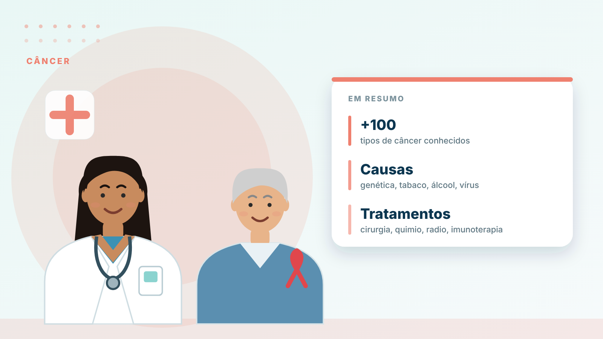
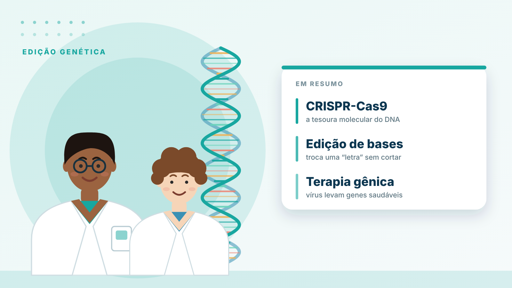
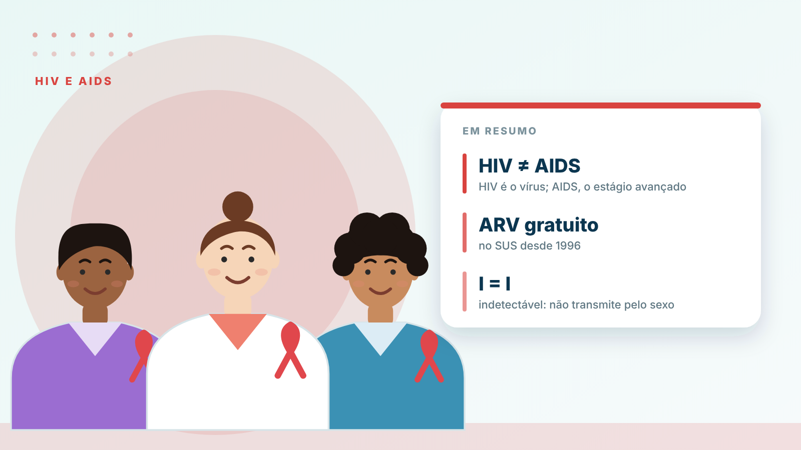
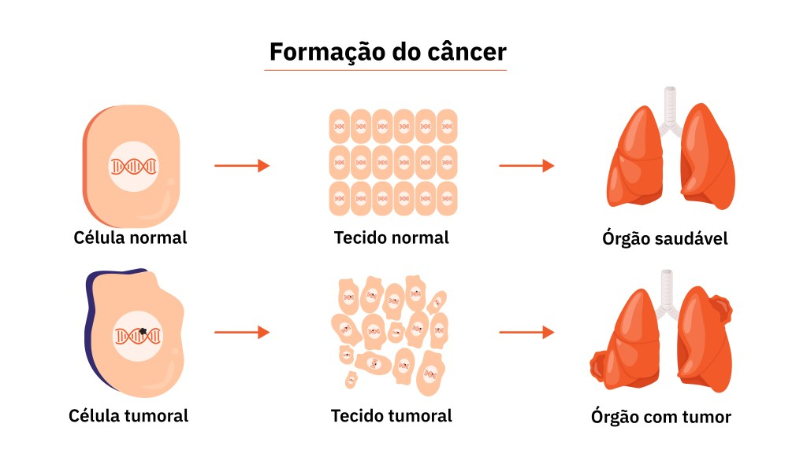
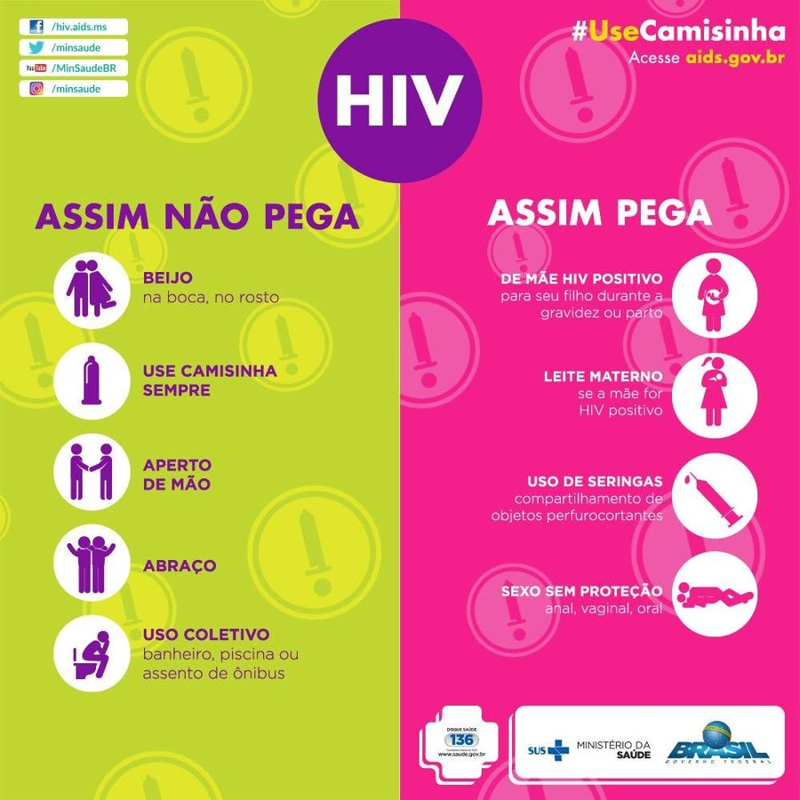
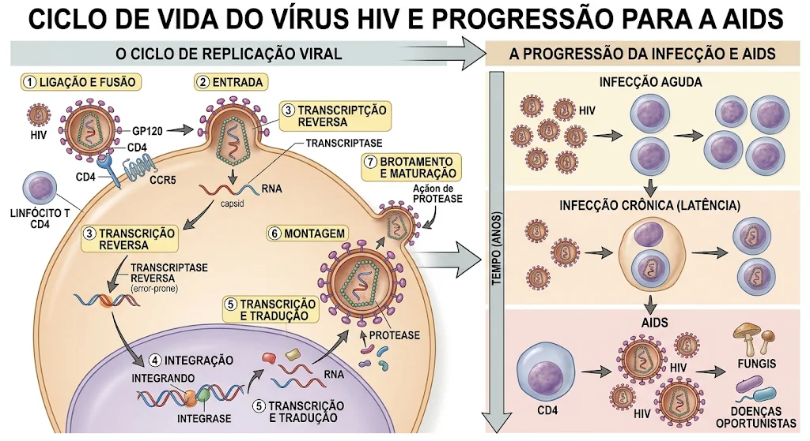

O tratamento elimina a doença
Depois do tratamento, a doença desaparece e a pessoa é considerada curada.
- Pneumonia bacteriana
- Hepatite C
- Alguns cânceres detectados cedo
Doenças difíceis de curar e as tecnologias que podem mudar esse cenário. Já pensou em editar uma pessoa?
Já pensou em editar uma pessoa?
PONTO DE PARTIDASomos um portal educativo que reúne, em um só lugar, o que são doenças incuráveis, o que é o câncer, como o HIV age e como a edição genética pode mudar o tratamento de doenças hoje difíceis de curar.
Cada tema é organizado em seções curtas, com imagens explicativas e links para as fontes que sustentam o conteúdo.
Consultar fontes →Escolha um cartão para ir direto à seção ou use a pesquisa no topo da página.
O que significam, tipos e por que ainda não têm cura.
→
ONCOLOGIAO que é, principais causas e tratamentos.
→
GENÉTICACRISPR-Cas9, edição de bases e terapia gênica.
→ PESQUISASEstudos recentes que deram certo contra o câncer.
→
IMUNOLOGIATransmissão, prevenção, tratamento e busca pela cura.
→Uma doença é considerada incurável quando ainda não existe tratamento capaz de eliminá-la de forma definitiva. Isso não quer dizer que não haja tratamento: muitas podem ser controladas por toda a vida.
Depois do tratamento, a doença desaparece e a pessoa é considerada curada.
O tratamento mantém a doença sob controle e permite uma vida longa, com acompanhamento contínuo.
Os tratamentos aliviam sintomas ou retardam a doença, mas ainda não mudam seu curso por completo.
Cada doença esbarra em um obstáculo diferente da biologia.
Doenças genéticas, como a anemia falciforme, nascem de erros no código genético.
O HIV integra seu material genético ao DNA das células de defesa, o que dificulta eliminá-lo.
Células tumorais acumulam mutações e podem escapar do tratamento.
Lesões em células do cérebro, como no Alzheimer, não se regeneram com facilidade.
Em 2023, o Casgevy tornou-se a primeira terapia baseada em CRISPR/Cas9 aprovada, no Reino Unido e depois nos Estados Unidos, para a anemia falciforme, uma doença hereditária do sangue. Em estudos, a grande maioria dos pacientes ficou pelo menos um ano sem crises graves de dor.
Entenda a edição genética →Crescimento descontrolado de células anormais que invadem tecidos saudáveis e formam tumores. Existem mais de 100 tipos.

Genética e histórico familiar, tabagismo, sol em excesso, produtos químicos, vírus (HPV, hepatites B e C), má alimentação, álcool, obesidade e idade.
A escolha depende do tipo e do estágio da doença.
Este conteúdo tem fins informativos e não substitui avaliação médica especializada.
O câncer surge de erros (mutações) no DNA. Hoje é possível ler e corrigir esse código.
O RNA guia (o “GPS”) localiza o DNA defeituoso e a enzima Cas9 corta no ponto exato.
EDIÇÃOTroca uma única “letra” do DNA sem cortar a fita dupla, com mais segurança.
PRECISÃOVírus inofensivos levam um gene saudável ou anticâncer para dentro das células.
TERAPIA
Estudos recentes mostram resultados promissores com edição genética e células CAR-T.
O CRISPR desligou o gene CISH em células T. Em 12 pacientes avançados, o tratamento foi seguro e houve uma resposta completa, sem retorno por mais de 2 anos.
Células com edição de bases induziram remissão em leucemia de células T e permitiram o transplante na maioria dos 11 pacientes.
Resposta preliminar de 87,5% em linfoma não Hodgkin sem outras opções. Foram tratados 25 pacientes; a meta é levar ao SUS.
Em animais, o câncer detectável sumiu em duas semanas. Ainda não foi testada em humanos.

O HIV é o vírus que ataca o sistema imunológico. A AIDS é o estágio avançado, sem tratamento.

Sexo sem proteção, de mãe para bebê, seringas compartilhadas e sangue ou órgãos não testados.
Camisinha, não compartilhar agulhas, PrEP e testes rápidos gratuitos no SUS.
Beijo, aperto de mão, abraço e uso coletivo de banheiro ou piscina não transmitem o HIV.

O tratamento controla o vírus, mas ainda não o elimina do organismo.
Gratuito no SUS desde 1996. Com carga viral indetectável, não há transmissão sexual (I=I). Mas não elimina o vírus.
Em camundongos, ARV de liberação lenta com CRISPR-Cas9 eliminou o HIV do genoma. Abre caminho para testes em humanos.

Conclusão: a edição genética não é cura para tudo, mas é um dos caminhos mais promissores para tornar curáveis doenças hoje consideradas permanentes.
Para aprofundar os temas, consulte as fontes oficiais e os artigos científicos usados neste conteúdo.